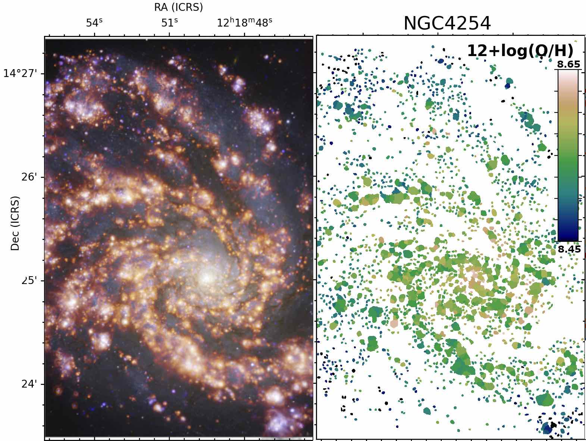

The introduction of heavy elements (metals) into the interstellar medium (ISM) via stellar feedback processes is crucial for the regulation of star formation and thus galaxy evolution. Metals set the heating and cooling balance in star-forming regions, and establish the carbon chemistry that is necessary for life on our planet. The gas-phase metal abundance (metallicity) is the most accessible measure of the build-up of chemical enrichment over cosmic time. However, there are large systematic uncertainties in our metallicity measurements, to the extent that we do not know if most galaxies are metal-rich or metal-poor compared to the Milky Way. These long-standing uncertainties plague our understanding of metal variations, but can now be addressed by vast new homogeneous data sets resolving tens of thousands of individual HII regions across nearby galaxies. This ambitious ERC starting grant tackles this problem by applying a data-driven approach to emission line measurements in our own Milky Way, Local Group galaxies (SDSS-V/LVM) and more distant Local Volume galaxies (PHANGS-MUSE). This project aims to resolve long-standing discrepancies in absolute metallicity calibrations and develop new and robust prescriptions that directly address electron temperature uncertainties. We will apply our methods to map out metallicity variations across more than 50 galaxies, providing quantitative constraints on the mixing scale and correlations with local physical conditions in the ISM. By establishing a new homogeneous local benchmark for absolute metallicity measurements, the ISM-METALS project will build a foundation for future studies of galaxy metallicities, enabling the robust interpretation of metallicity variations soon to be measured across cosmic time with upcoming new facilities (JWST, ELT).